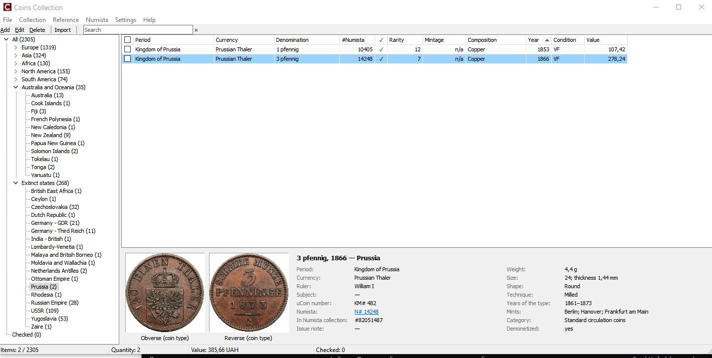

Початок роботи

Скриншот: images/01-main-window.png
Встановлення та оновлення
- Запустіть
CoinsCollection-Setup-<версія>.exe. Права адміністратора не потрібні. - Якщо Windows SmartScreen попереджає про невідомого видавця, натисніть Детальніше → Однаково запустити.
- Програма встановлюється для поточного користувача в
%LOCALAPPDATA%\Programs\CoinsCollection(можна вибрати іншу папку, але не в Program Files: програма зберігає дані у своїй папці).
Оновлення: встановіть нову версію поверх старої — колекція, фото та налаштування залишаються; база оновлюється автоматично (з резервною копією).
Видалення: файли програми видаляються, колекція, фото та налаштування залишаються в папці.
Перші кроки
- Експортуйте колекцію з uCoin у файл
.xlsxта імпортуйте його: Імпорт з uCoin. - Зареєструйтеся на Numista, отримайте власний ключ API та введіть його в Numista → Connect / Settings/Numista → Підключення / налаштування: Numista: підключення.
- Пов'яжіть монети з каталогом Numista: Numista: зв'язок монет.
- Вивантажте їх у свою колекцію на Numista: Numista: вивантаження.
Мова
Settings → Language/Налаштування → Мова — English або Українська. Без налаштування — англійська.
Де зберігаються дані
| Папка / файл поруч із програмою | Що всередині |
|---|---|
Db\ | База колекції та її автоматичні резервні копії (*.bak): перед кожним оновленням бази й перед кожним імпортом. |
Photos\ | Фото монет (JPEG). У базі — лише імена файлів. |
Numista\ | Збережені відповіді Numista: тип монети, знайдений один раз, більше не запитується. |
CoinsCollection.ini | Налаштування: мова, ваш ключ API Numista, лічильник запитів за місяць. |
Щоб перенести колекцію на інший комп'ютер, зробіть резервну копію (Резервна копія та відновлення) і відновіть її там.